Tim Operator Berpengalaman
Didampingi tim operator yang memberikan pengarahan keselamatan dan membantu Anda menikmati jalur off-road dengan nyaman.
KEUNGGULAN LAYANAN
Komitmen kami untuk menghadirkan pengalaman ATV off-road yang aman, nyaman, dan berkesan.
Didampingi tim operator yang memberikan pengarahan keselamatan dan membantu Anda menikmati jalur off-road dengan nyaman.
Layanan penjemputan hotel tersedia sesuai area dan biaya transfer yang dipilih saat pemesanan.
Seluruh tarif dihitung transparan via Kalkulator Harga. Tidak ada biaya tersembunyi (hidden fees) atau paksaan belanja saat perjalanan.
PENGALAMAN TERBAIK DI BALI
Nikmati sisi lain Bali melalui jalur off-road tropis yang menantang. Rasakan sensasi berkendara melewati lumpur, aliran sungai, jalur hutan, dan lanskap alam yang berbeda dari wisata biasa.
Uji adrenalin di trek tanah, lumpur, dan jalur alam tropis yang seru.
Pilih berkendara sendiri atau berbagi satu ATV dengan teman atau pasangan.
Jelajahi suasana pedesaan dan lanskap tropis dengan pendampingan tim operator.
Sekitar 1,5–2 jam (konfirmasi operator)
Private Car
Off-road tropis
Termasuk
Pilih jumlah pengendara Single dan Tandem, tanggal aktivitas, serta area penjemputan hotel untuk menghitung perkiraan total biaya. Pemesanan maksimal 2 orang.
Ketentuan pemesanan: maksimal 2 orang per pemesanan (contoh: 2 Single ATV, atau 1 Tandem ATV).
Pilih area penjemputan jika Anda membutuhkan transportasi. Harga transfer per mobil pulang-pergi.
Tersedia untuk pemesanan dengan penjemputan hotel. Pemberhentian ini gratis dan tidak menambah total biaya.
Tarif area Amed, Lovina, Tulamben, dan Candidasa berada pada kisaran Rp700.000–Rp800.000, bergantung lokasi hotel. Tim kami akan mengonfirmasi tarif tepatnya melalui WhatsApp.
08.00 – 10.30
Fasilitas Antar-Jemput: Sopir ramah kami akan menjemput Anda tepat waktu di lobi hotel.
Welcome & Safety Briefing: Setibanya di basecamp, nikmati secangkir kopi khas Bali. Instruktur profesional akan memberikan demo singkat cara mengoperasikan ATV (semi-otomatis atau transmisi manual), yang mudah dipelajari bahkan bagi pemula.
Perlengkapan Keamanan: Setiap peserta wajib mengenakan helm standar keselamatan dan sepatu bot tahan air yang disediakan.
10.30 – 12.30
Nikmati lintasan sepanjang kurang lebih 7–9 kilometer yang dirancang untuk memacu adrenalin sekaligus memanjakan mata.
Track Lumpur & Hutan Tropis: Tantang diri Anda melintasi jalur berlumpur alami di bawah rindangnya pepohonan tropis.
Terowongan Gelap (Cave Tunnel): Lewati terowongan buatan bawah tanah yang unik dan estetik untuk spot foto keren.
Lembah Sungai & Air Terjun Mini: Berkendara di tepi sungai berarus jernih dengan cipratan air yang menyegarkan.
Sawah & Perkampungan Lokal: Sapa warga lokal dan nikmati panorama terasering sawah hijau khas pedesaan Ubud.
12.30 – 13.30
Fasilitas Bilas: Ruang ganti dan kamar mandi bersih dilengkapi sabun, handuk, dan air hangat untuk menyegarkan tubuh setelah bermain lumpur.
Lunch Buffet: Nikmati makan siang prasmanan dengan menu kuliner Nusantara di restoran terbuka tepi lembah.
13.30 – 16.00
Gunakan waktu bebas untuk melihat hasil foto profesional yang diabadikan oleh tim fotografer di titik-titik terbaik selama perjalanan. Setelah itu, Anda akan diantar kembali ke hotel tempat menginap.
CLEAR & TRANSPARENT SERVICE
Periksa fasilitas yang sudah termasuk dan biaya yang menjadi tanggungan pribadi sebelum memulai petualangan Anda.
Saran: Ikuti instruksi operator mengenai perlengkapan keselamatan. Konfirmasikan fasilitas yang termasuk dalam paket sebelum aktivitas.
The duration depends on the selected ATV route and operator schedule. Please confirm the expected duration with our team before booking.
Beginner suitability depends on the operator’s route and safety requirements. All riders must attend the safety briefing and follow the operator’s instructions.
Yes. Hotel pick-up and drop-off are available. The round-trip transfer fee depends on your accommodation area and will be shown in the calculator; some distant areas may require confirmation by our team.
Pick-up time depends on your location. Our team will confirm the schedule and share the driver’s contact details via WhatsApp before the activity.
Included equipment and safety gear depend on the ATV operator and selected package. Please confirm the inclusions with our team before booking.
Wear comfortable clothes and closed shoes with good grip. Bring a change of clothes, sunscreen, and a secure waterproof pouch for your phone if needed. Confirm safety equipment and other inclusions before the ride.
Optional activities may be available depending on the package. Select the activity you want during booking and check the displayed additional costs before confirming.
Pilih jumlah Single dan Tandem ATV, tanggal aktivitas, serta area penjemputan hotel. Kirim detail Anda melalui WhatsApp dan tim kami akan mengonfirmasi pemesanan.
Cash payment is commonly used. Please confirm the payment arrangement with our team when your booking is discussed.
Safety comes first. The ATV operator may adjust or postpone the ride if weather or route conditions are unsafe. Please follow the team’s guidance and contact us if you have questions before your activity.
Make your Bali adventure even more memorable. Explore our other experiences and contact our team for package details and availability.
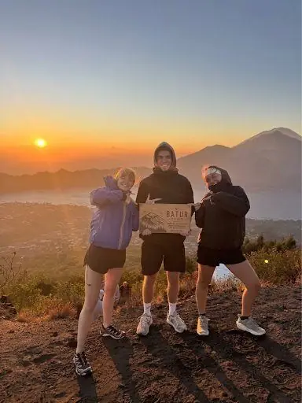
Best SellerExperience a magical sunrise from the summit of Mount Batur with our local guide.
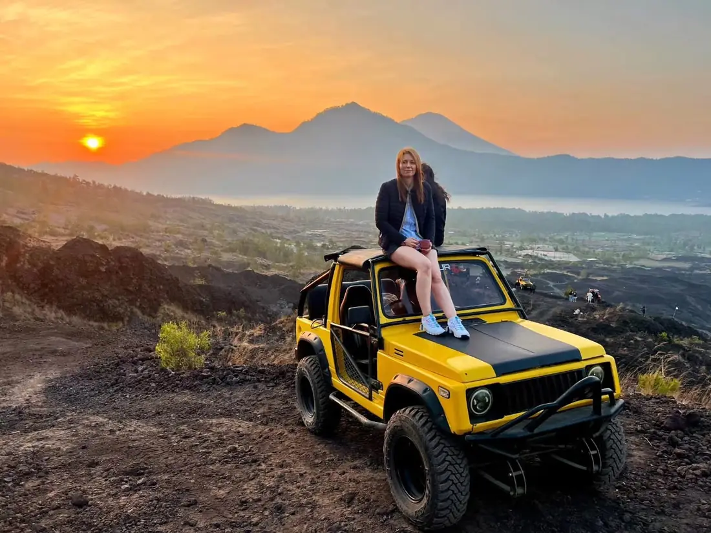
Jeep SunriseEnjoy Mount Batur sunrise from a 4x4 Jeep, with options for scenic volcanic stops.
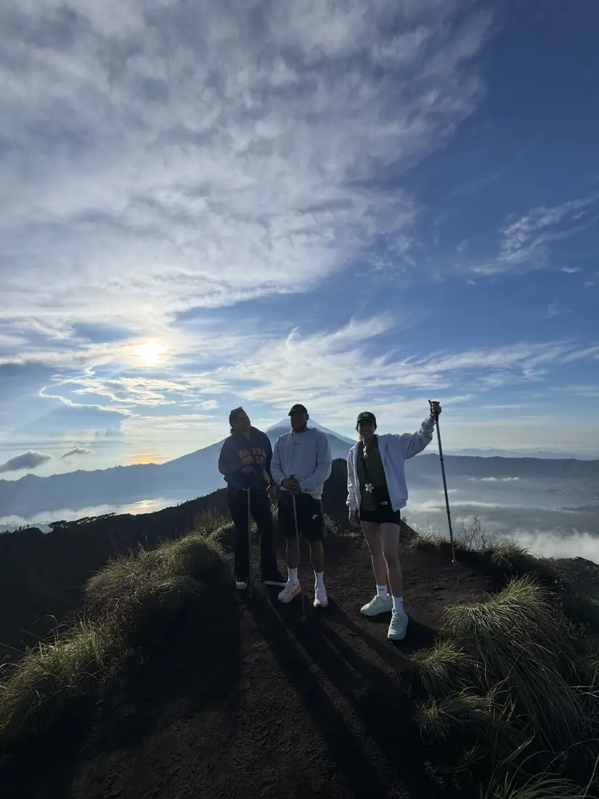
Daytime TrekkingExplore Mount Batur in daylight with volcanic scenery and a local trekking guide.
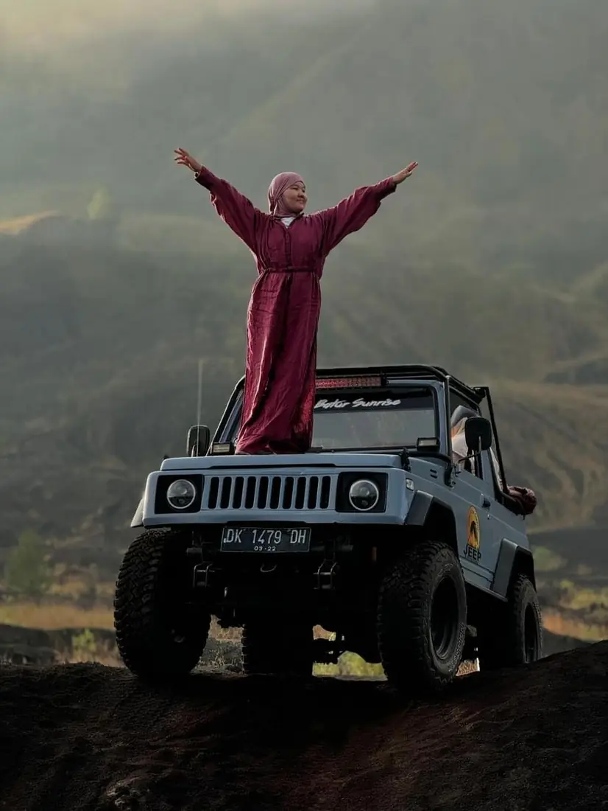
Jeep Day TripDiscover Mount Batur’s volcanic landscape on a scenic 4WD Jeep adventure.
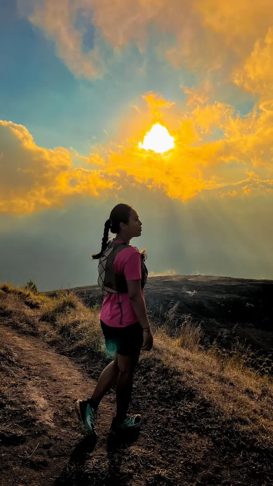
Sunset TrekkingEnjoy golden-hour views and a memorable Mount Batur sunset trek with a local guide.
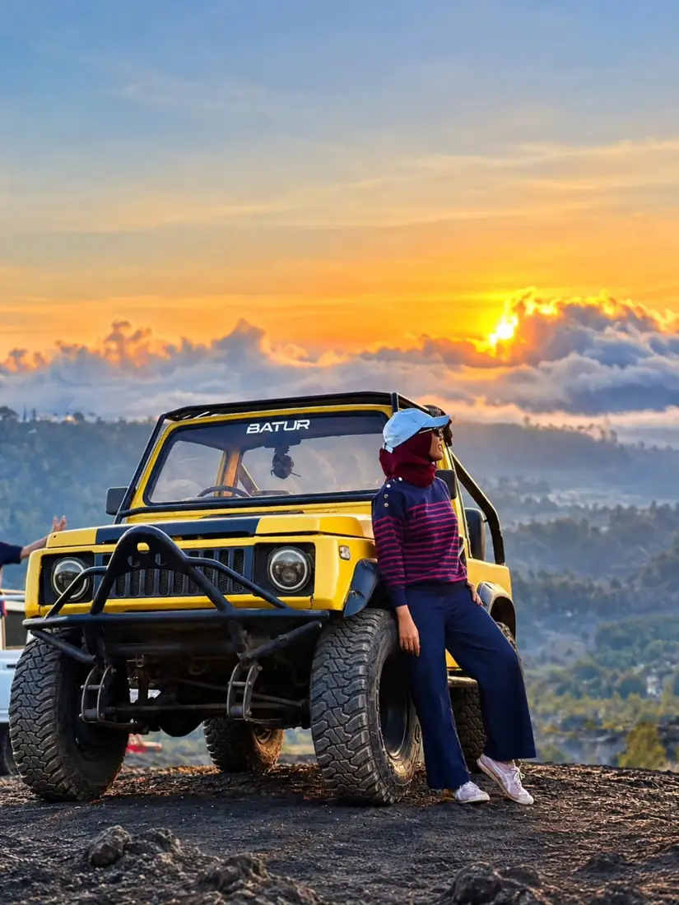
Sunset Jeep TourTake in Mount Batur’s sunset scenery by Jeep with a choice of volcanic routes.
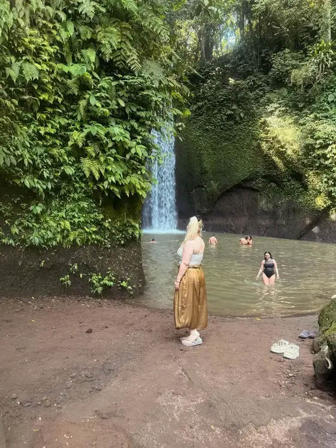
WATERFALL EXPEDITIONDiscover Kanto Lampo, Tegenungan and Tibumana waterfalls with private AC transport and an experienced local guide.
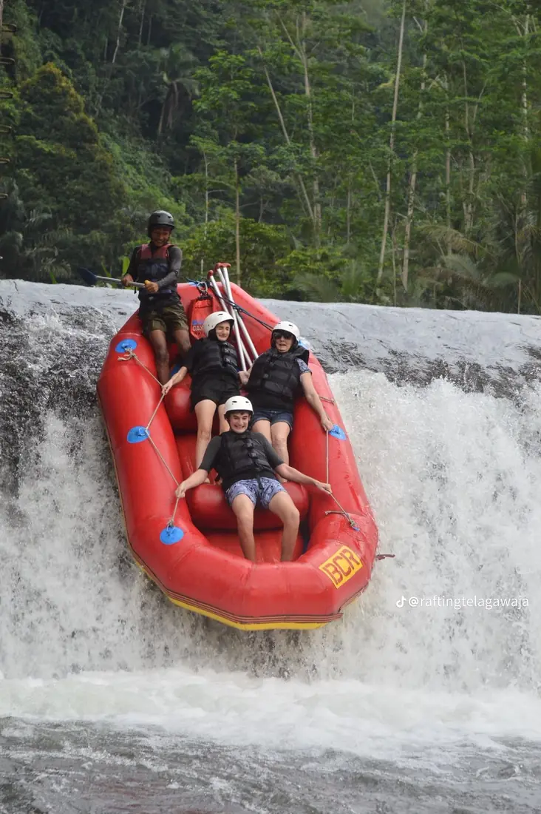
WHITE WATER RAFTINGEnjoy an exciting river rafting adventure surrounded by Bali’s tropical scenery.
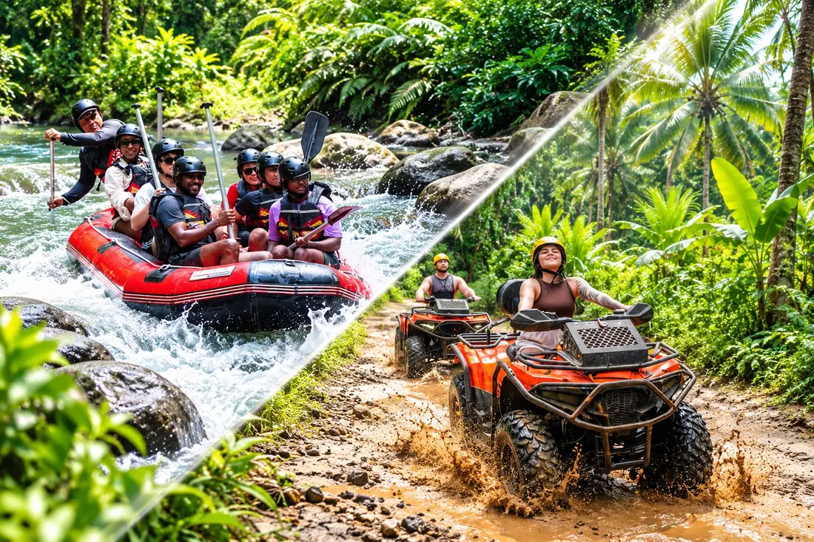
ATV + RAFTINGCombine an off-road ATV ride with an exciting Ayung River rafting experience.
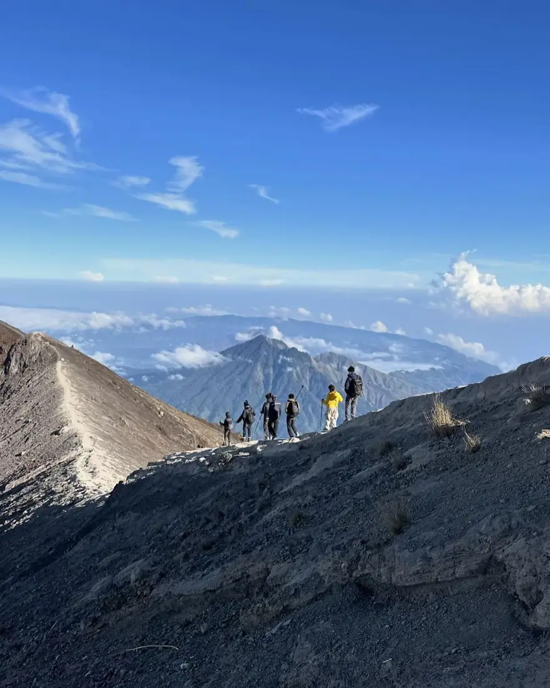
SUNRISE TREKKINGChallenge yourself with a Mount Agung sunrise trek and sweeping mountain views.
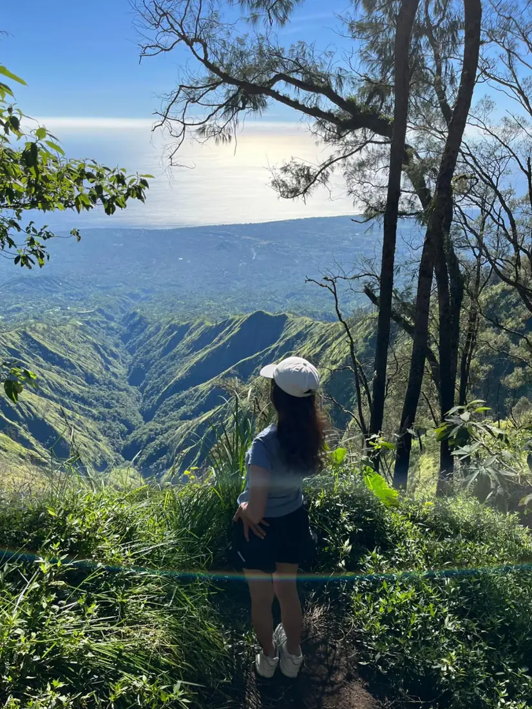
JUNGLE TREKKINGExplore Mount Abang’s peaceful forest trails and enjoy beautiful highland scenery.
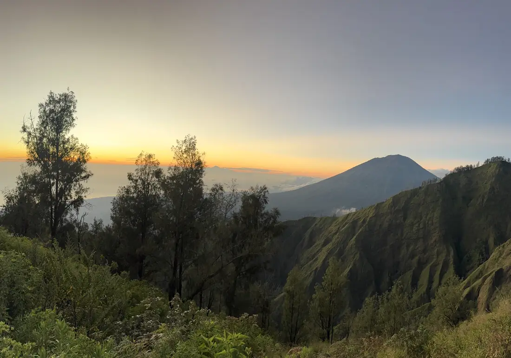
SUNRISE TREKKINGDiscover Trunyan Hill at sunrise for a quieter trek and panoramic views of the Batur caldera.
Share your Bali Quad Bike ATV Adventure experience and help other guests plan their trip.
There are no guest reviews here yet. If you have joined one of our tours, you can share your feedback using the button below.
Reviews submitted here are saved in this browser on this device. They are not automatically sent to AWAN TREKKING or shared with other visitors.
Pilih layanan penjemputan langsung dari hotel atau vila Anda, lalu kami antar pulang setelah aktivitas ATV selesai.
Biaya transportasi pulang-pergi menyesuaikan area hotel. Masukkan nama hotel dan alamat penjemputan saat mengisi pesanan.
Detail waktu penjemputan akan dikonfirmasi melalui WhatsApp setelah pemesanan.
Pilih Area PenjemputanCatatan: Paket ini menggunakan layanan penjemputan hotel. Silakan pilih area penjemputan pada kalkulator; tarif untuk beberapa area akan dikonfirmasi kembali berdasarkan alamat hotel.
Pilih jumlah Single ATV dan Tandem ATV, masukkan detail penjemputan hotel, lalu kirim pemesanan kepada tim AWAN TREKKING.
Our AWAN TREKKING customer service team is happy to help with ATV adventure planning, bookings for large groups, pickup questions, and customized tour package requests. Contact us and we’ll help you plan the right experience.
Halaman khusus pemesanan. Periksa ringkasan pilihan Anda, lalu lengkapi data diri untuk menyiapkan pesanan.